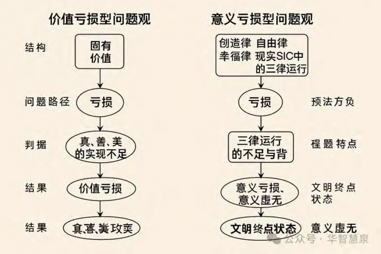

——从价值亏损到意义虚无的新定义
摘要
在人类思想与文明的发展史中，“问题”始终是行动与思考的出发点。无论是在哲学推理、宗教训诫、科学研究还是社会管理中，问题的定义不仅决定了人们如何认识世界，也决定了人们采取何种方式去改变世界。在漫长的历史中，东西方文明都不约而同地将问题理解为一种真、善、美价值的亏损，只是具体的表现形式与路径各有差异。
在西方，尤其是在神学和古典哲学传统中，问题往往被定义为“背离最高价值”的状态。基督教神学将“堕落”视为终极问题，意味着人类从原初的完美状态滑落，导致真、善、美的全面亏损；古典希腊哲学则将问题理解为偏离“善”的生活方式。近代启蒙运动虽然用理性取代了神圣权威，但依然保留了“固有价值先在、实践服从其后”的基本结构。
在中华文化中，真善美体现为“生生不息”的生成过程，因此问题被看作是对诚、中、和的亏损：诚指对本心与真实的忠实，中指行为与环境的动态平衡，和指多方关系的和谐。失去诚，行动失去根基；失去中，行为失去尺度；失去和，社会失去稳定。
而在印度文化中，真善美则体现在“离苦得乐”的智慧路径中，问题表现为对空、不二、缘起的匮缺：空是对执着与固化的解构，不二是超越对立的统一，缘起是万事万物相依的生成。执着、二元对立与断裂感，则是印度传统意义上的“问题”核心。
这种以价值亏损为核心的问题观有其历史合理性：它提供了明确的判据，使社会与个体可以快速聚焦到被视为重要的领域。但随着全球化、多元文化交融与高度复杂化社会的到来，这种模式的局限性愈加明显——它固化了价值的形态，排斥多元性，且容易让过程性的意义生成退化为对既定价值的机械追求。
本文提出意义实践论下的问题新定义：问题不应仅仅被视为价值的缺失，而应被理解为意义三律（创造律、自由律、幸福律）运行的不足与违背。价值亏损只是意义亏损的一种表征，而当三律全面、长期低运行时，便形成了“意义虚无”——问题的极限形态。这种新定义不仅在哲学上将本体起点从“固有价值”转向“现实SIO（主体—互动—客体统一场）”，在实践上也让诊断与干预更具灵活性和适配性：通过测量三律运行状态，可以发现多元文化、不同领域中的问题共性与差异，并针对性恢复意义运行的丰满度、广度、深度与层级性。
本文将首先回顾传统价值亏损型问题观的历史形成与文化差异，继而重生西方神学中的“堕落”概念，将其转化为“意义运行堕落到价值追求”的新解释；再通过意义实践论框架提出“意义亏损”与“意义虚无”的定义与分类，并结合教育、医疗、企业管理等领域的案例进行剖析。最后，本文将提供一套新问题观的操作化方法，包括诊断、测量与干预路径，展示其在跨文化、跨领域实践中的适用性与优势。
这种转向的核心意义在于：从价值中心转向意义中心，让“问题”不再是固定答案下的偏差修正，而是动态生成与持续优化的契机。这不仅为理论提供了新的本体论基础，也为文明在多元共存与共同进步之间找到新的平衡与动力。
引言
1. 问题：人类思想与行动的起点
在人类思想史与实践史中，“问题”不仅仅是一个中性描述，它是一切行动与认知的出发点。无论是柏拉图在对话中抛出的哲学追问，还是农耕社会农人对天气异常的应对，亦或是现代科学实验室里科研人员面对异常数据的分析，问题都是激活思维、驱动选择、促成改变的核心触发器。
问题之所以重要，在于它并非仅仅存在于事物的“客观缺陷”之中，而是被主体在特定文化、价值、认知框架下主动识别与界定。不同文明、不同哲学体系、不同历史阶段，对“什么是问题”都有不同的定义与回应路径，而这种定义直接影响了后续行动的方向与性质。
因此，研究“何谓问题”并不仅仅是语义分析或概念澄清，而是一次对人类行动逻辑深层结构的解剖：我们如何看待缺陷、如何界定偏差、如何设定目标、如何组织资源去应对它，这些都根植于问题观之中。
2. 传统问题观的主导地位
纵观历史，东西方的主流问题观有一个显著的共同点：都把问题理解为真、善、美价值的亏损。这种共性并非偶然，而是源自人类普遍的文化心理与生存逻辑——当我们感知到某种理想状态（真理的清晰、善的圆满、美的和谐）与现实状态之间的差距时，就会将这种差距视为“问题”，并以消除或缩小它为实践目标。
然而，这一共性在不同文化体系中有着各自的表达方式和价值指向：
西方传统：尤其是在神学与古典哲学中，问题被视为“背离最高律令”或“堕落”。
中华文化：问题被看作是对“诚、中、和”的亏损，即偏离了“生生不息”的持续生成与和谐运行。
印度文化：问题是对“空、不二、缘起”的匮缺，即陷入执着、对立与断裂，失去解脱与圆融。
这种价值亏损型的问题观为人类社会提供了清晰的行动指南，也形成了长期稳定的文化秩序。但在现代复杂多变的全球化背景下，这种模式的局限性日益突出。
3. 西方神学问题观的影响与局限
在西方神学传统中，“堕落”是对问题的核心定义。按照《创世纪》的叙事，人类原本处于与上帝完美相通的状态，拥有真、善、美的圆满，但因违背神意而堕落，结果是失去真理的清明、善的纯全、美的和谐。问题在此框架下，是价值的亏损，救赎的目标就是修复这种亏损。
这种观念深刻影响了西方文化中的问题定义与解决逻辑：
定义方式：先有一个完美的、最高的价值标尺，然后现实中的偏离就被定义为问题。应对方式：通过遵循律法、执行教义、回归标准来修复偏差。
局限性也在这里显现：一旦固有价值被设定，它就成为唯一合法的目标，排除了其他可能的价值形态和意义生成方式。
4. 东方视野下的问题观
（1）中华文化
在儒家、道家、古代中国整体文化氛围中，真善美并不是一个静态的、彼岸的完美模型，而是体现在现实生活的“生生不息”中。
诚：对本心与真实的忠实
中：行为与环境、个人与社会之间的动态平衡
和：多方关系的谐调与共生
问题在这种框架下，就是对诚、中、和的亏损——失去了内外一致、偏离了平衡点、破坏了和谐关系。解决问题，不是简单回到一个固化的标准，而是恢复生生不息的生成力。
（2）印度文化
印度哲学与宗教传统，如佛教、印度教，强调的是“离苦得乐”的智慧路径。真善美在这里不是外在的秩序，而是内在觉悟的状态。
空：洞察一切执着与固化的虚妄本性
不二：超越对立的统一视野
缘起：承认一切现象的相互依存与生成
问题被理解为对空、不二、缘起的匮缺：陷入执念、被二元对立困住、否认相依共生的现实。解决问题的路径是通过修行与觉悟，恢复对动态生成与无执的感知力。
5. 价值亏损型问题观的历史合理性
这种基于真善美亏损的问题观，能够长时间主导不同文明，并非偶然：
1. 明确性：提供清晰的判断标准，方便社会协调行动。
2. 稳定性：固有价值体系一旦确立，就能维持长久的社会秩序与文化认同。
3. 可操作性：在实践层面，可以通过修复偏差来衡量行动效果。
然而，这种合理性建立在一个假设之上：真善美的定义是唯一且稳定的。一旦进入多元社会、跨文化交流、快速变化的现实环境，这个假设就会暴露问题：
不同文化对真善美的理解差异巨大，统一的价值标准难以成立。
固化的价值形态会压制新的意义生成方式，使社会失去适应力与创造力。
过程意义被边缘化，导致“目标达成但主体空心化”的现象。
6. 本文的研究转向：从价值亏损到意义亏损
本文主张将问题的定义从“价值亏损”转向“意义亏损”。这一转向有三个核心要点：
1. 本体起点：从固有价值观转向现实SIO（主体—互动—客体统一场）的实际运行。
2. 判据体系：用意义三律——创造律、自由律、幸福律——来衡量问题。
3. 极限状态：当三律全面、长期低运行时，形成“意义虚无”，这是问题的极限形态。
这种新定义不仅能包容不同文化的真善美观，还能在快速变化的情境中保持适应性，因为它关注的是运行状态而非固定目标。
7. 引言小结
研究“何谓问题”，本质上是在重建实践的出发点。传统价值亏损型问题观提供了历史上的秩序与稳定，但在今天的多元与动态现实中，它的局限性越来越明显。意义实践论提出的“意义亏损”定义，不是要否定价值，而是要将价值从实践的本体起点降为实践运行的生成物，让问题的界定回到真实互动的生成性之中。这一转向将为后续关于“意义虚无”“新问题观的操作化”以及跨领域应用奠定理论基础。
第一部分：传统问题观——价值亏损
一、哲学与历史背景
1. 古典希腊的“善”与偏离
古希腊哲学家，尤其是柏拉图与亚里士多德，都将问题理解为对一种最高生活状态——“善”（eudaimonia）——的偏离。
在柏拉图的世界中，“善”是理念世界的最高形态，是一切价值的源泉。问题的本质是人类生活与理念世界的最高真理之间的距离。
亚里士多德进一步将“善”落实到德性实践（praxis）中，尤其是政治生活与道德行为。实践的优劣取决于它是否导向德性的完善。如果一个行为偏离了德性目标，它就是一个“问题”。
这种定义方式有几个特征：
1. 先设定最高价值标准（善、德性）
2. 以该标准为基准审视现实
3. 偏离即是问题，解决问题就是修复偏离
这种结构是典型的价值亏损模式：价值是先验的，实践的任务是弥补亏损。
2. 西方宗教传统的“堕落”模式
在基督教神学中，问题的核心定义是“堕落”（Fall）。
《创世纪》描述，人类原本处于与上帝和谐相通的状态，拥有真、善、美的圆满，但因违背神的旨意而堕落，失去完美。
因此，问题不是随机出现的，而是背离最高价值的结果。解决问题的途径是回归神意，通过救赎恢复真善美的圆满。
在伊斯兰文化中，《古兰经》与教法（Sharia）规定了清晰的生活与道德准则。任何背离这些准则的行为都被视为问题，必须通过忏悔、修正来回归正道。
这一模式在文化上的影响是深远的：它将“问题”与“罪”直接关联，把价值亏损的修复纳入宗教救赎的路径之中，强化了固有价值的不可质疑性。
3. 中华文化的“生生不息”与诚中和
中华文化中，儒家与道家共同构成了价值体系的基础。这里的真善美并非彼岸的完美模型，而是体现在现实生活的持续生成中。
诚：忠实于本心与真实，不虚伪、不自欺
中：找到行为与环境的动态平衡，不偏不倚
和：人与人、人与自然、群体与群体之间的和谐共处
问题被理解为对诚、中、和的亏损。例如，一个人失去了诚，就会在行为上虚假、在决策上失去正直；失去了中，就会在处理事务上偏激；失去了和，就会导致关系紧张甚至社会冲突。
在这种观念下，解决问题的目标不是回到一个固定的理想状态，而是恢复生生不息的运行能力——不断生成、调整、再平衡。
4. 印度文化的“离苦得乐”与空不二缘起
印度哲学和宗教，如佛教与印度教，将真善美视为解脱与觉悟的内在状态。
空：洞察一切执着与固化的虚妄本性
不二：超越二元对立，看到本质上的统一
缘起：一切现象相互依存、动态生成
问题被理解为对空、不二、缘起的匮缺。当一个人执着于固定观念、陷入对立冲突、否认相互依存时，他就陷入了问题状态。解决的方向是通过修行恢复无执、圆融和觉知。
二、价值亏损的基本定义
在这些文化与哲学传统中，尽管具体的价值内容不同，但问题的定义模式高度一致：
固有价值作为基准 → 现实状态偏离该基准 → 偏差被视为问题
核心特征
1. 价值先在：真善美或其文化等价物是独立于现实而存在的理想形态
2. 现实从属：现实必须服从于该理想形态
3. 问题即偏差：只要现实偏离了价值，就必须被修复
这种模式有一个明显的逻辑优势——判断清晰、行动目标明确。但它也内在地压制了多元价值与意义生成的可能性。
三、价值亏损的运行机制
在价值亏损模式下，问题的应对路径可以抽象为一个闭环：
1. 确立固有价值观
2. 读取现实SIO（主体—互动—客体）运行状态
3. 用固有价值对现实进行特征符号化（理论形成）
4. 用理论干预现实SIO
5. 修复价值亏损
6. 用修复绩效衡量智慧
医疗案例
价值实践论：健康指标下降（价值亏损） → 用医学理论修复指标 → 成功即问题解决这种方式能在短期内提升指标，但可能忽视患者体验、参与感与长期生活质量
教育案例
价值实践论：成绩下滑（价值亏损） → 补课、刷题 → 分数提升即问题解决
忽视了学生的学习兴趣、创造力、幸福感
企业管理案例
价值实践论：利润下降（价值亏损） → 削减成本、强化KPI → 财务报表改善即问题解决
可能导致团队士气低落、创新停滞
四、局限性分析
1. 固化与排他
固有价值一旦设定，就排除了其他可能性，尤其在跨文化交流中容易引发冲突。
2. 忽视多元价值
在全球化背景下，不同文化、不同领域的价值体系并不相同，统一的标准难以包容多样性。
3. 压制意义生成
当问题被定义为价值亏损时，所有实践都指向修复价值，这会让实践失去探索和生成新意义的空间。
4. 对过程的忽视
只关注结果（价值的修复），忽略过程中的创造性、自由度与幸福感。
第二部分：东西方问题观的共性与差异
一、共性：真善美价值亏损的核心结构
纵观世界主要文明，不论其宗教信仰、哲学体系、社会制度有多么不同，对“问题”的定义几乎都建立在真、善、美价值的亏损这一核心结构之上。这种共性来自人类普遍的心理与认知机制：
1. 设定理想状态——真理的清晰、善的圆满、美的和谐；
2. 感知偏差——现实与理想之间的距离；
3. 判定问题——偏差即为问题，修复偏差即为解决。
这种三步式的模式，使得各文明可以稳定地界定什么是值得投入资源和智慧去解决的事情。但“真善美”的内涵在不同文明中呈现出截然不同的面貌，这直接影响了它们的问题观的具体形态与运行方式。
二、西方文化的问题观
1. 神学模式：堕落与救赎
在基督教神学中，“堕落”是问题的原型。亚当与夏娃因违背神意而被逐出伊甸园，从而失去了真、善、美的圆满状态。
真的亏损：失去了与神直接沟通的纯真与洞见；
善的亏损：人性被原罪所染，倾向自私与背离道德律；
美的亏损：失去伊甸园的和谐与完满。
问题的解决是救赎——通过信仰与遵循神意回归失落的价值。这里的价值是超越性的、不可质疑的。
2. 哲学模式：偏离理性与普遍法则
古典与近代西方哲学中，问题常被视为对理性秩序的破坏。康德的“实践理性”要求行为遵循普遍道德律，否则便构成问题。启蒙时期的科学精神，则将违反自然规律或逻辑法则的行为视为错误与问题。
三、中华文化的问题观
中华文化的问题观植根于“生生不息”的世界观，强调生成、平衡与和谐。真善美在这里并非静态的理念，而是动态运行的品质：
诚：忠实于本心与真实，是“真”的文化体现；
中：行为与环境的动态平衡，是“善”的社会实践；
和：多方关系的和谐，是“美”的运行结果。
问题就是对诚、中、和的亏损：失去诚导致虚伪与内外不一，失去中导致行为失衡与社会冲突，失去和则破坏群体与自然的共生关系。
四、印度文化的问题观
印度文化尤其是佛教，将真善美体现在“离苦得乐”的智慧中：
空：洞察执着与固化的虚妄，是真的解构；
不二：超越对立的统一，是善的超越；
缘起：承认万事相依的生成，是美的动态。
问题被视为对空、不二、缘起的匮缺——执着、对立与孤立。解决的方向是通过修行与觉悟恢复这种三重运行状态。
五、共性与差异的总结
共性
三者都将问题理解为真善美价值的亏损；
都假定存在某种理想的运行状态；
都将修复价值亏损作为问题解决的核心目标。
差异
西方：真善美是超越性的（神意、理性法则），偏离即堕落，回归即救赎。
中华：真善美是内在的、生成性的，亏损即失衡，修复即重建动态运行。
印度：真善美是觉悟的状态，亏损即被执着与对立束缚，修复即解脱与圆融。
第三部分：对西方神学问题观的重生
一、传统神学问题观：堕落与真善美亏损
在西方神学体系中，“堕落”是关于“问题”的原型定义，也是神学解释世界、解释人类困境的核心符号。按照《创世纪》的叙述，亚当与夏娃原本处在与上帝无隔阂的完美状态中，生活在伊甸园里，享受真理的清晰、善的圆满、美的和谐。然而，他们因违背上帝的命令，偷食“分别善恶树”的果子而堕落。这一行为被解读为人类背离了上帝所设定的终极价值体系，结果是：
真的亏损：人类失去了直接洞见真理的能力；
善的亏损：人类的意志被“原罪”玷污，倾向自私与邪恶；
美的亏损：失去了与上帝和自然完美共处的伊甸园。
在这种结构中，问题的定义是偏离与亏损，修复问题的方式是救赎，即回到上帝的律法与旨意之中，恢复原初的真善美。这种模式的逻辑很清晰：
1. 先验的终极价值标准（神意）
2. 人类行为偏离该标准（堕落）
3. 通过特定路径回归该标准（救赎）
这一模式在中世纪统治了欧洲思想世界，不仅塑造了宗教生活，也深刻影响了法律、政治、伦理和教育。
二、传统模式的局限性
这种“堕落—救赎”模式的局限性在于它将问题的根源固定为价值的缺失，并且这些价值是由先验权威设定、不可质疑的。由此带来三大限制：
1. 单一价值锁定：排除了其他文化或群体的价值体系，形成排他性。
2. 实践的工具化：一切实践都服务于回归价值标准，而非生成新的意义。
3. 过程的边缘化：过程本身的创造、自由、幸福体验被忽略，只看结果是否符合标准。
三、重生的转向：从价值亏损到意义运行堕落
在意义实践论视角下，我们对“堕落”这一问题原型进行重生性解读：
堕落，不再是单纯的真善美价值的亏损，而是意义三律（创造律、自由律、幸福律）的运行退化为单一价值目标驱动。
这种新诠释带来两个根本转变：
1. 本体起点转变：从固有的神意—价值体系，转为现实SIO（主体—互动—客体统一场）的实际运行状态。
2. 问题的根源转变：不再是偏离终极价值，而是三律运行的不平衡、不丰满，甚至被某一价值完全绑架。
四、重生后的堕落定义
在意义实践论下，“堕落”意味着：
创造律衰退：不再生成新结构、新路径、新方法，而是依赖既有价值框架重复旧模式。
自由律受限：路径与角色被固定，无法切换或多样化选择。
幸福律枯竭：过程中的满足感、成就感与和谐感缺失，即便结果符合既定价值。
换句话说，堕落是从意义运行的动态丰盈堕落到价值单一化追求，是从活的生成退化为僵化的服从。
五、救赎的转向：从价值回归到意义再生
在传统神学中，救赎是回到神设定的价值秩序；在重生性诠释中，救赎则是恢复三律的平衡与运行丰满度：
1. 让创造律重新运转：允许并鼓励生成新的互动模式、认知框架和生活结构；
2. 让自由律重新扩展：恢复路径、角色、场态的切换能力；
3. 让幸福律重新贯通：让过程与结果的愉悦感相一致，避免“赢了结果、输了生命体验”。
这种救赎不是单一方向的回归，而是一个动态生成—自我调整—多元共存的过程。
六、文化类比与跨时空案例
1. 宗教改革的类比
16世纪的宗教改革可被视为一次部分的“意义再生”：它打破了单一的教会权威，恢复了信仰实践的多样性与个人参与度，尽管它仍然停留在价值中心的框架内，但在自由律的扩展上迈出了一步。
2. 当代社会中的堕落与救赎
教育领域：当教育仅服务于分数与排名，创造律与幸福律严重受损；意义再生的救赎是开放课程、项目制学习、跨学科探索。
企业管理：当企业文化被利润指标单一驱动，自由与幸福枯竭；意义再生是让团队拥有自主项目权、跨部门合作、成果分享的文化。
公共政策：当治理仅以经济增长为唯一指标，社会创新力与公众幸福感下降；意义再生是引入社会参与、环境可持续、文化多元的综合目标。
七、新旧问题观的对比表
| 维度 | 传统神学问题观 | 重生后的意义实践论问题观 |
|---|---|---|
| 本体起点 | 神意与终极价值 | 现实SIO运行 |
| 问题定义 | 偏离终极价值（真善美亏损） | 三律运行退化为价值单一化 |
| 解决路径 | 回归固有价值（救赎） | 恢复三律平衡与运行丰满度 |
| 结果导向 | 一致性符合标准 | 过程与结果的三律共生 |
八、小结
对西方神学问题观的重生，不是简单地否定其价值追求，而是将其置于更广阔的生成性意义框架中加以转化。堕落不再是一次历史性的断裂，而是任何时空中都可能发生的动态退化；救赎也不再是对单一标准的回归，而是恢复创造、自由、幸福三律的平衡与丰盈运行。这种重生性转向，使得传统神学的“问题—救赎”结构获得了新的哲学生命力，并能够与其他文明的意义生成逻辑相通。
第四部分：意义实践论的问题观
一、本体起点的转移
1. 从固有价值到现实SIO
在价值实践论中，问题被理解为“固有价值与现实状态之间的差距”，这种差距需要通过修复回到既定标准。然而，这种模式假定了一个先验的、不变的价值体系，使得实践变成了价值的执行工具。
意义实践论彻底改变了这一起点——不再从固有价值出发，而是从现实SIO（主体—互动—客体的统一场）的实际运行出发来界定问题。
主体（S）：拥有感知、意图与行动力的人或群体
互动（I）：主体与客体之间、主体与主体之间的关系与过程
客体（O）：被互动所指向、改造或感知的对象
在这种视角下，价值不是出发点，而是运行过程中可能生成的产物；问题也不是对固有价值的偏离，而是现实SIO中意义三律运行的不平衡、不丰满与违背。
二、意义亏损的定义
1. 三律作为问题判据
意义实践论用创造律、自由律、幸福律三条核心运行规律来判断一个实践情境是否存在“问题”：
创造律：是否持续生成新的结构、方法、路径和可能性
自由律：是否允许路径切换、角色互换、场态转化
幸福律：是否在张力—转换—释放循环中带来满足感、愉悦感与成就感
当三律运行水平不足时，就构成“意义亏损”。
2. 意义亏损的四种类型
1. 单律亏损：某一条律运行不足，如创新枯竭（创造律亏损）、决策僵化（自由律亏损）、过程痛苦（幸福律亏损）
2. 双律亏损：两条律运行不足，如教育中既缺乏创造也缺乏自由
3. 多律失衡：三律都在运行，但比例严重失调，导致整体效果下降
4. 全面亏损：三律运行均长期处于低水平，接近“意义虚无”的状态
三、意义亏损的案例分析
1. 教育领域
单律亏损：应试教育中，教学内容高度标准化，创新能力被抑制（创造律亏损），但学生在自由选择和幸福感方面可能尚可。
双律亏损：课堂完全围绕考试成绩，既缺乏创新自由，也缺乏学习幸福感。
多律失衡：项目制课堂中，创造性很强，但缺乏有效管理（自由律过度膨胀导致混乱，幸福律下降）。
全面亏损：学生对学习完全失去兴趣，课堂只是机械执行任务。
2. 医疗领域
单律亏损：传统手术流程追求精确与效率（创造律、幸福律尚存），但病人决策参与度低（自由律亏损）。
双律亏损：过度标准化的诊疗缺乏个性化与人文关怀，病人体验差（幸福律亏损），医护缺乏自主创新（创造律亏损）。
全面亏损：长时间依赖机械化医疗流程，患者、医生、护士均感到疏离与疲惫。
3. 企业管理
单律亏损：创新型企业后期追求稳定（幸福律提升），但创新力下滑（创造律亏损）。
双律亏损：传统制造业中过度强调KPI（幸福律、自由律双亏损）。
全面亏损：长期内卷化与加班文化下，创新停滞、自由缺失、幸福感崩溃。
四、意义亏损的诊断方法
1. 定性观察
创造律观察：项目中是否有新方法、新路径出现？
自由律观察：成员是否有自主调整任务和方法的权力？
幸福律观察：参与者在过程中的情绪与状态如何？
2. 定量测评
创造力指数：新想法/新方案的数量与质量
自由度指数：可供选择的路径数量与切换成本
幸福感指数：周期性调查满意度、愉悦度、成就感
五、与价值亏损型问题观的对照
| 维度 | 价值亏损型问题观 | 意义亏损型问题观 |
|---|---|---|
| 本体起点 | 固有价值标准 | 现实SIO运行 |
| 维度 | 价值亏损型问题观 | 意义亏损型问题观 |
|---|---|---|
| 问题定义 | 偏离价值 | 三律运行不足或失衡 |
| 解决方式 | 修复价值缺口 | 恢复三律平衡与丰满度 |
| 成功判据 | 符合价值标准 | 三律运行的丰满度、广度、深度、层级性 |
六、小结
意义实践论的问题观强调动态生成而非静态回归。它把价值从问题定义的起点降格为运行的产物，从而允许多元文化、不同领域在共同的意义生成机制下找到交汇点。这种观念的转变，使得“问题”从一个单一标准下的偏差，变成了一个多维、动态可调的运行状态的诊断，极大提升了实践智慧的适应性与创新性。
第五部分：意义虚无——问题的极限形态
一、什么是“意义虚无”
在意义实践论中，意义虚无是问题发展的极限形态。它并非单纯的价值缺失，也不是暂时的意义运行不畅，而是创造律、自由律、幸福律三者在现实SIO中长期、全面、结构性地低水平运行，导致系统失去生成、调整和体验的能力。
这种状态的核心特征有三点：
1. 生成力丧失（创造律枯竭）：没有新的结构、方法和路径被创造出来，系统陷入自我重复与衰退循环。
2. 选择权丧失（自由律冻结）：主体无法改变路径、切换角色或调整互动模式，只能被动接受单一安排。
3. 体验感丧失（幸福律断裂）：过程不再带来满足感、愉悦感与成就感，结果即便“达标”，也无法带来内在的认同与喜悦。
这三方面同时长期低运行时，就会出现一种文化、组织乃至文明层面的“空心化”——外部形式依然存在，但内部已失去活力与意义。
二、意义虚无与虚无主义的区别
1. 虚无主义的哲学立场
虚无主义是一个哲学概念，它否定世界与人生存在任何客观、稳定、终极的意义，认为一切价值和目的都是虚构的。这是一种认知与信念层面的否定态度。
2. 意义虚无的运行特征
意义虚无不是思想上的否定，而是运行上的枯竭——即使主体相信意义存在，也无法在现实SIO中体验、生成或维持它。换句话说，意义虚无是一个可被诊断和干预的运行状态，而虚无主义是一种哲学结论。
3. 对应关系
虚无主义可能是意义虚无的结果，但不是唯一原因。
意义虚无不必然导致虚无主义，它可能表现为麻木、冷漠、盲目行动等。
三、意义虚无的形成机制
1. 长期价值实践论的统治
在价值实践论的框架下，固有价值被设定为唯一合法目标，三律被迫服从于单一价值的修复。这会产生三个长期累积的副作用：
创造律被压制，因为创新常常会冲击既定价值标准；
自由律被削弱，因为路径和角色被固定在价值修复的轨道上；
幸福律被忽略，因为过程体验不在智慧判据内。
2. 三大固化机制的累积效应
前文提到的主导性SIO场态固化、三律权重固化、运行阶段固化，长期作用下会导致系统缺乏自适应能力。当外部环境剧变时，这种系统会直接崩溃，或者陷入僵化停滞。
3. 社会结构与技术的加速影响
现代社会的高度分工、技术垄断和算法驱动，强化了单一目标导向（如流量最大化、利润最大化），使得意义运行的三律更加不平衡。
四、当代人类文明的意义虚无现象
1. 教育系统
形式：全球范围内的应试化与指标化教育，让学生习惯于为考试而学，缺乏自主探索与创造。
后果：高分低能、学习倦怠、学业焦虑成为普遍现象，毕业后缺乏终身学习的动力。
2. 医疗系统
形式：医疗流程高度标准化，医生与患者被置于指标与流程的两端。
后果：患者缺乏参与感与自主权，医患关系冷漠化，医务人员职业倦怠率上升。
3. 企业与经济
形式：KPI和短期利润最大化成为管理与投资决策的唯一标准。
后果：创新乏力、员工疏离、工作倦怠、组织文化空心化。
4. 公共治理
形式：以GDP、政绩数字作为唯一衡量标准。
后果：环境破坏、社会撕裂、公共信任下降，民众的幸福感与参与感缺失。
5. 数字文化
形式：算法与平台经济驱动的“注意力捕获”，内容生产趋同化、媚俗化。
后果：文化浅薄化、信息污染、公共讨论质量下降。
五、意义虚无的多层级表现
1. 个体层面
心理状态：空虚、倦怠、焦虑、冷漠
行为模式：机械执行任务、缺乏主动探索、逃避挑战
认知特点：短期化、碎片化、低深度思考
2. 组织层面
决策模式：路径依赖、风险回避、抑制创新
文化氛围：低信任、低凝聚力、低参与度
绩效表现：短期目标达成，长期竞争力下降
3. 文明层面
价值结构：多元价值被边缘化，单一指标垄断意义评判
创造能力：跨领域突破减少，原创思想产出下降
幸福体验：社会幸福指数停滞或下降
六、从意义虚无走向意义再生的路径
1. 恢复创造律
引入跨学科、跨领域合作
鼓励小规模、低风险的试验性项目
容忍失败并将其作为学习资源
2. 扩展自由律
多路径并行决策
灵活角色切换机制
提供自主选择权与退出权
3. 贯通幸福律
在设计目标与流程时同时考量过程体验
建立即时反馈与正向激励系统
平衡张力、转换与释放的节奏
七、小结
意义虚无不仅是个体的心理困境，更是文明运行模式的深层危机。它源于长期的价值实践论统治与固化机制累积，加之现代社会结构和技术加速的作用，导致创造、自由、幸福三律全面失衡。解决这一问题，必须从本体论上完成转向：不再将固有价值作为实践的起点，而是以三律的运行丰满度作为智慧与健康的核心判据。唯有如此，人类文明才能从虚无的边缘回到意义的生成之中，实现真正的再生。
第六部分：新问题观的操作化
一、操作化的目标与意义
意义实践论下的新问题观，不是停留在哲学论证层面的抽象定义，而是要求能够被观察、测量、诊断、干预、持续优化。
目标：从价值亏损的修复逻辑转向意义三律运行的恢复与丰满。
意义：让“问题”的定义不仅能在理论上包容多元文化，还能在实践中精准定位问题性质，匹配个性化的解决路径。
这一部分的核心，是建立一个系统化的操作闭环：
测量 → 诊断 → 干预 → 反馈 → 再优化
二、测量：如何捕捉意义运行的状态
1. 三律运行指数体系
创造力指数（CI）：衡量主体在特定SIO中的新结构、新方法、新路径的生成频率与质量。
自由度指数（FI）：衡量主体在路径选择、角色切换、场态转换上的空间与成本。
幸福感指数（HI）：衡量主体在张力—转换—释放循环中的满足感、愉悦感与成就感。
2. 定性与定量结合
定性：访谈、观察、体验日志、案例描述。
定量：问卷量化评分（1-10分）、行为数据采集（路径切换次数、新方案数量、满意度曲线）。
3. 测量工具示例
教育领域：课堂参与度传感器 + 创意作品计数 + 即时学习满意度投票
医疗领域：患者参与决策比例 + 新技术/新流程引入频率 + 术后幸福感追踪
企业领域：创新项目占比 + 员工自主决策空间评分 + 团队幸福指数调查
三、诊断：从数据到问题识别
1. 单律亏损识别
创造律亏损：创新产出持续下降，问题解决方法重复单一。
自由律亏损：路径固定，角色无法转换，缺乏自主决策权。
幸福律亏损：过程体验差，情绪负面累积，成就感缺失。
2. 多律失衡识别
一律过高、两律过低：例如自由过高而创造不足、幸福感缺失，导致无效探索。
三律比例极不平衡：导致整体运行效率下降。
3. 全面亏损与意义虚无预警
三律均长期处于低水平。
系统创新能力、适应能力、幸福感同步衰退。
典型特征：参与者表现出倦怠、冷漠、机械执行任务。
四、干预：恢复与提升三律运行
1. 针对单律亏损的干预策略
创造律亏损：引入跨领域协作、设立低风险试验区、建立容错机制。
自由律亏损：增加路径选项、授权角色切换、开放多样化任务分配。
幸福律亏损：调整张力与释放的节奏、增加正向反馈、引入情感支持机制。
2. 针对多律失衡的干预策略
平衡过高的单律与不足的律：例如在自由度过高的团队中引入结构化创新流程，以提升创造律。
3. 针对全面亏损的干预策略
先恢复一律作为突破口（通常选择幸福律，让参与者重获动力），再逐步恢复其他两律，形成正向循环。
五、反馈与再优化
1. 即时反馈机制
每次干预后，立即测量三律变化，形成数据曲线。
用可视化方式让参与者看到变化趋势，增强自我调节动力。
2. 长期跟踪
通过月度/季度测评跟踪三律运行的持续性与波动性。
检测干预策略的耐久效果，避免短期效应消退。
3. 动态再设计
根据反馈调整法（目标—路径—约束）、术（组织—操作—转换）、器（材料—工具—环境）的组合。
六、跨领域应用框架
1. 教育
测量：学生创造性作业占比、课堂自由选择比例、学习幸福感调查。
干预：项目制学习、小组自主选题、课堂即时反馈。
2. 医疗
测量：患者在治疗决策中的参与度、创新诊疗技术引入率、术后幸福感评分。
干预：联合决策会、术中创新方案试点、人文关怀流程。
3. 企业
测量：新业务/新产品占比、员工自主项目数、团队幸福指数。
干预：内部创业计划、角色轮换制度、团队庆祝与成果分享。
4. 公共治理
测量：公共项目创新率、公众参与机制数量、社会幸福指数。
干预：多元协商平台、政策试点、社区文化节。
七、小结
新问题观的操作化，实现了从抽象哲学定义到现实可测可管的闭环转化。它让“意义亏损”与“意义虚无”不再是模糊感受，而是可量化、可诊断、可干预的运行状态。这一体系的实施，将使教育、医疗、企业、治理等领域能够在复杂多变的环境中持续生成意义、保持三律平衡，并真正走出价值实践论时代的结构性困境。
结论
1. 从价值亏损到意义亏损的根本转向
本文的核心贡献，是将“问题”的本体起点，从固有价值的缺失转向意义三律（创造律、自由律、幸福律）运行的不平衡与不足。这一转向解放了问题观的文化局限性，使其不再依赖唯一合法的价值体系，而是建立在所有文化都可共享的现实SIO运行机制之上。
2. 意义虚无作为文明危机的终点状态
我们指出，意义虚无是问题发展的极限形态，也是当今人类文明面临的核心危机。它不是思想上的虚无主义，而是运行上的枯竭：三律在长期、全面的低运行状态下，导致个体、组织、社会和文明的空心化。这一诊断为全球性的倦怠、疏离和创造力衰退提供了结构性解释。
3. 操作化的可行路径
通过构建测量—诊断—干预—反馈的闭环体系，我们使“意义亏损”与“意义虚无”从抽象的哲学概念，转化为可观察、可测量、可干预的运行状态。这一体系可以直接应用于教育、医疗、企业管理与公共治理，实现跨领域、跨文化的意义恢复与生成。
4. 对不同文明的融合意义
西方文明：从神学的“堕落—救赎”逻辑，重生为“意义运行—意义再生”的生成论框架。
中华文明：将“诚中和”的生成哲学与三律运行融合，形成动态平衡的实践路径。
印度文明：将“空、不二、缘起”的解脱智慧，内化为防止三律固化与失衡的长效机制。
这种融合，为全球文明在多元价值共存的背景下，寻找共同的问题诊断与解决语言提供了可能。
5. 对未来研究与实践的呼吁
未来的研究，应当关注以下方向：
1. 在更多领域验证三律测量工具的有效性与跨文化适应性；
2. 探索在AI与数字化背景下，如何防止技术系统加剧意义亏损；
3. 建立全球意义运行指数（Global Meaning Operations Index, GMOI），作为跨国比较与政策制定的参考指标。
在实践层面，我们呼吁教育者、医疗工作者、企业管理者、公共政策制定者，将三律运行丰满度作为智慧与成效的核心标准，而不仅仅是固有价值的达成度。
总而言之，从价值亏损到意义亏损的转向，不是对过去几千年人类思想成果的否定，而是对其进行一次结构性升级。它让问题观回到真实互动的生成现场，使我们能够同时诊断和修复个体生命、组织生态与文明系统的意义运行，为摆脱意义虚无、重建创造力与幸福感提供了切实路径。

最后的美餐：价值亏损 = 意义三律违背的具象化
一、概念对应关系
价值实践论的问题定义是价值亏损——真、善、美等固有价值的缺失或偏离；而意义实践论的问题定义是意义三律运行的不足或违背。这两者并非毫无关系，而是存在一个重要的具象化关系：
价值亏损，是意义三律违背在特定文化与历史语境中的显性表现。
换言之，价值亏损只是意义三律运行受阻的表层形态，是三律违背被文化翻译、固化成的符号化目标。
二、价值亏损的三律映射
| 固有价值 | 三律对应 | 意义三律违背的表现 | 价值亏损的文化化身 |
|---|---|---|---|
| 真 | 创造律 | 停止生成新认知、新方法、新结构 | “失真”、“错误”、“偏离真理” |
| 善 | 自由律 | 互动模式僵化、选择受限 | “不道德”、“不公义” |
| 美 | 幸福律 | 张力-转换-释放循环断裂、体验感缺失 | “不和谐”、“丑恶” |
解析：
当创造律长期受阻，主体无法生成新的结构与认知，文化会将其显化为“真理的丧失”或“知识的堕落”；
当自由律长期受阻，互动模式单一，角色不可切换，文化会将其显化为“不义”或“失德”；
当幸福律长期受阻，过程痛苦、结果空虚，文化会将其显化为“不和谐”、“审美沦丧”。
三、历史与文化中的具象化路径
1. 西方神学
意义三律违背：创造律冻结（信仰僵化）、自由律压缩（教义约束）、幸福律断裂（救赎只在彼岸）。
价值亏损表现：真（异端）、善（罪恶）、美（失乐园）。
2. 中华文化
意义三律违背：创造律不足（守旧）、自由律不足（等级固化）、幸福律不足（关系紧张）。
价值亏损表现：失诚（真）、失中（善）、失和（美）。
3. 印度文化
意义三律违背：创造律不足（执着旧法）、自由律不足（陷于二元）、幸福律不足（轮回苦）。
价值亏损表现：缺空（真）、失不二（善）、断缘起（美）。
四、从表层修复到底层调节
传统价值实践论在面对价值亏损时，通常直接针对表层进行修复：
失真 → 回归真理教义；
不善 → 强化道德规范；
不美 → 恢复和谐秩序。
然而，这种表层修复往往治标不治本，因为它没有触及价值亏损的底层原因——意义三律运行的失衡。
意义实践论的转向：
先诊断三律运行状态（创造律、自由律、幸福律）；
通过法-术-器的创新与组合，恢复三律运行丰满度；
价值作为结果自然浮现，而非先验设定。
五、案例对照
案例1：教育
价值亏损表现：学生失去学习兴趣（失真）、课堂死板（失善）、校园氛围压抑（失美）。
意义三律诊断：创造律低（缺乏探索）、自由律低（课程固定）、幸福律低（学习痛苦）。
干预：引入项目制学习、增加学生选修权、优化评价体系。
案例2：企业
价值亏损表现：创新乏力（失真）、员工离职潮（失善）、企业文化枯竭（失美）。意义三律诊断：创造律低（创新停滞）、自由律低（角色僵化）、幸福律低（无归属感）。
干预：设立内部创业平台、推行弹性岗位、加强团队正向反馈。
六、结语
价值亏损只是意义三律违背在文化与历史条件下的“显影”，它是一种结果，而非根源。将价值亏损还原为三律运行的失衡，我们就能在不同文明之间找到共通的诊断语言，也能从根本上设计更有效的干预方案。
这不仅让问题定义从单一价值体系的排他性中解放出来，更让实践回到生成性意义的本体状态，使智慧的判据从“修复既定价值”转向“促进三律的丰盈运行”，从而真正避免意义虚无的蔓延。